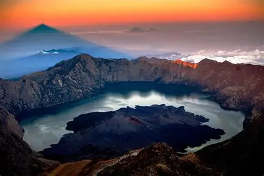
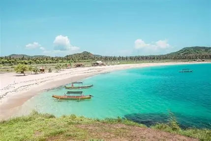
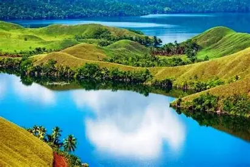

WISATA INDONESIA
Keindahan Alam dan Budaya Nusantara
MENU
HomeGaleri
Kontak
🏔 GUNUNG RINJANI |
|
Gunung Rinjani terletak di Pulau Lombok, Nusa Tenggara Barat. Gunung ini merupakan gunung berapi tertinggi kedua di Indonesia dengan pemandangan yang sangat menakjubkan. Di puncaknya terdapat danau kawah bernama Segara Anak yang menjadi ikon wisata alam Lombok. Mendaki Gunung Rinjani memberikan pengalaman yang tak terlupakan bagi para pecinta alam karena keindahan panorama dan udara sejuknya. |
🏝 PANTAI LOMBOK |
|
Pantai-pantai di Lombok terkenal dengan keindahan pasir putih dan kejernihan air lautnya. Salah satunya adalah Pantai Tanjung Aan yang memiliki bentuk teluk menawan dan cocok untuk bersantai serta snorkeling. Selain itu, wisatawan juga bisa berkunjung ke Desa Sade untuk mengenal budaya suku Sasak yang masih asli dan terjaga. |
🌅 PANTAI BALI |
|
Pantai Bali, seperti Pantai Kuta dan Sanur, menjadi tujuan wisata paling populer di Indonesia. Keindahan matahari terbenam, budaya Hindu Bali yang kental, dan keramahan masyarakatnya membuat Bali dikenal di seluruh dunia. 
Bali juga menawarkan berbagai aktivitas wisata seperti surfing, kuliner, hingga pertunjukan tari tradisional yang memikat wisatawan. |
🏞 DANAU SENTANI |
|
Danau Sentani terletak di Papua dan merupakan danau terbesar di provinsi tersebut. Dikelilingi oleh pegunungan Cycloop, danau ini menawarkan panorama yang luar biasa dengan air yang tenang dan desa-desa terapung di sekitarnya. Festival Danau Sentani yang digelar setiap tahun menampilkan kekayaan budaya dan kesenian khas Papua. |